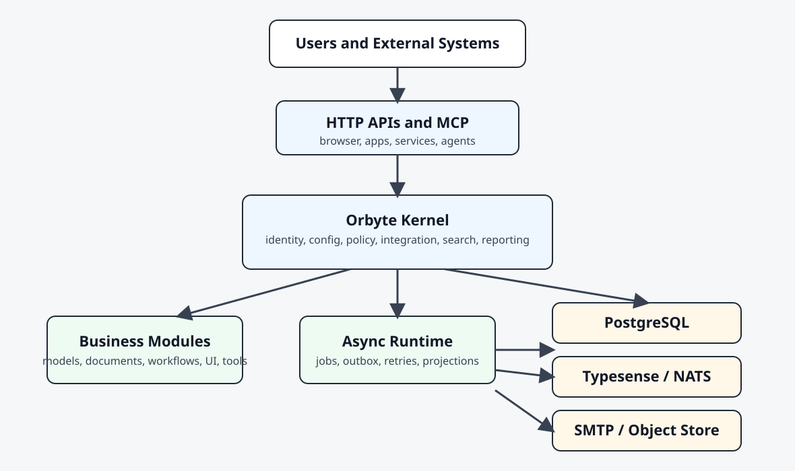
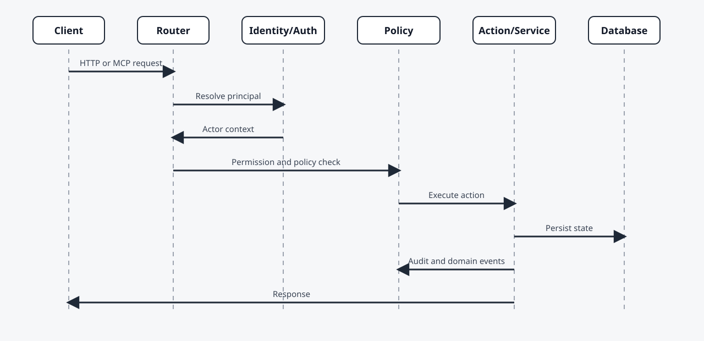

Architecture¶
This guide describes the runtime architecture of Orbyte.
High-Level View¶
At a high level, Orbyte is a modular Go application with:
- a bootstrapped kernel
- a bootstrap/container composition layer
- manifest-driven business modules
- generic HTTP and MCP runtime surfaces
- optional external infrastructure such as PostgreSQL, Typesense, NATS, SMTP, and object storage
For the target-state engineering role of MCP and its relationship to ACP and the agent workspace, see MCP Target Architecture.
Reference Diagram¶

+-----------------------------+
| External Users and Systems |
+-------------+---------------+
|
+-------------------+-------------------+
| |
+------+-------+ +-------+------+
| Browser Apps | | AI / Services |
+------+-------+ +-------+------+
| |
+-------------------+-------------------+
|
+-------+--------+
| Orbyte Server |
|-----------------|
| HTTP APIs |
| UI contracts |
| Admin APIs |
| MCP endpoints |
+-------+--------+
|
+-----------------------+-----------------------+
| | |
+------+-------+ +-------+------+ +--------+------+
| Kernel Svcs | | Business Mods | | Async Runtime |
|--------------| |---------------| |---------------|
| identity | | models | | jobs |
| config | | documents | | outbox |
| policy | | workflows | | retries |
| integration | | views | | projections |
| search | | tools | | deliveries |
+------+-------+ +-------+------+ +--------+------+
| | |
+-----------------------+-----------------------+
|
+------------+------------+------------+------------+
| | | |
+------+-----+ +----+------+ +------+----+ +-----+------+
| PostgreSQL | | Typesense | | NATS | | SMTP/Object |
+------------+ +-----------+ +-----------+ +------------+
Diagram source files for future rendering:
docs/assets/architecture-overview.mmddocs/assets/request-flow.mmd
Runtime Layers¶
1. Storage Layer¶
The storage layer persists platform state.
Primary storage options:
- PostgreSQL
- in-memory repositories for local development and tests
The schema includes:
- organizations and locations
- users, roles, sessions, service principals
- configuration entries
- model definitions and records
- document definitions and records
- installed modules
- workflow state
- audit and eventing data
2. Platform Services¶
The kernel is composed from a set of services, including:
- configuration
- feature flags
- organization and identity
- module registry
- model and document services
- workflow engine
- audit and eventing
- search
- analytics and reporting
- policy
- integration
- idempotency
- jobs
- template output
- runtime health and monitoring
These services are assembled during app startup and validated before the server begins accepting requests.
Bootstrap Boundary¶
The current runtime is intentionally split into two responsibilities:
- bootstrap/container assembly creates repositories, services, runtime adapters, MCP server wiring, and application dependencies
httpxremains transport-focused and consumes already-built dependencies to register HTTP routes and middleware
This separation keeps delivery concerns out of service construction and makes runtime assembly easier to test and reason about.
3. Runtime Actions¶
On top of the services, Orbyte defines higher-order application actions such as:
- document actions
- model actions
- kernel command execution through unit-of-work patterns
These actions handle:
- optimistic concurrency
- transactional writes
- audit recording
- domain event emission
- outbox creation
4. Delivery Surfaces¶
Orbyte exposes multiple surfaces:
- HTTP APIs
- UI contract endpoints for generic shells
- admin APIs
- MCP JSON-RPC endpoints
- analytics event streams
These surfaces are intended for:
- browser-based operators
- external applications
- automation clients
- service principals
- external AI agents
MCP should be treated as the canonical machine-facing business contract for external agents, while ACP remains the runtime/session bridge to external providers. The detailed target-state model is defined in MCP Target Architecture.
Extension Model¶
The platform is extended by module manifests. There are two main sources of manifests at startup:
- built-in kernel packs, which provide the platform's core capability base
- profile-provided business manifests, which add domain-specific modules selected by
APP_DOMAIN_PROFILE
A module can contribute:
- models
- documents
- workflows
- config definitions
- permissions and role templates
- policy hooks
- search indexes
- datasets and reports
- templates
- UI views and actions
- offline capabilities
- MCP tools and resources
This allows the kernel to stay stable while business capabilities evolve independently.
The target direction is for modules to be broadly discoverable and operable through MCP in business terms, using a mix of generic platform tools, synthetic module wrappers, and specialized hand-authored tools. See MCP Target Architecture.
Runtime Configuration and Identity Helpers¶
Process-level runtime settings are centralized through typed runtime configuration instead of being read ad hoc throughout the codebase. Runtime-generated identifiers are also standardized through a shared ID service.
This gives the platform:
- consistent startup behavior
- cleaner operational configuration boundaries
- deterministic contract generation
- more uniform IDs across jobs, submissions, sessions, and runtime-created records
Request Flow¶
A typical runtime request follows this path:
- authentication and principal resolution
- authorization and policy checks
- service or action execution
- persistence
- audit and event recording
- asynchronous follow-up through jobs, outbox, or integration processing

Example Synchronous Flow¶
client -> auth -> permission check -> policy check -> document/model action
-> transaction -> audit/event/outbox -> response
Example Asynchronous Flow¶
business write -> domain event -> outbox/job -> integration adapter
-> retry/dead letter if needed -> downstream system
Event and Integration Flow¶
Business writes can generate:
- audit events
- domain events
- outbox records
- search projection updates
- analytics snapshots
- integration submissions
This allows Orbyte to support both synchronous APIs and asynchronous enterprise integration patterns.
Configuration and Policy Flow¶
Configuration is resolved using scope inheritance:
- deployment
- organization
- location
Policies can be defined through:
- built-in evaluators
- Rego modules
- scoped configuration-backed rules
This allows governance to change without patching business code.
AI and Agent Connectivity¶
Orbyte is intentionally designed so AI interaction happens through governed surfaces, not hidden internal shortcuts.
The preferred connection patterns are:
- HTTP APIs for application integration
- MCP tools and resources for agent tooling
- events and integration contracts for asynchronous workflows
- service principal and delegation models for controlled non-human access
Recommended Responsibility Split¶
External AI runtime:
- planning
- reasoning
- user interaction
- multi-step orchestration
Orbyte:
- source of truth
- approved actions
- policy and permission enforcement
- audit trail
- integration state
Deployment Topology¶
Typical topology:
- Orbyte application server
- PostgreSQL
- optional Typesense
- optional NATS
- optional SMTP and object storage
- external clients, business apps, and AI agents connected through API and MCP surfaces
Architecture Outcomes¶
This architecture is optimized for:
- modularity
- governance
- operational traceability
- machine integration
- long-lived enterprise evolution